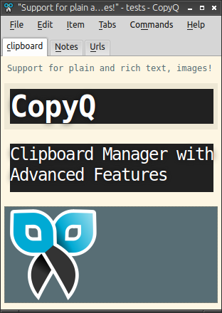
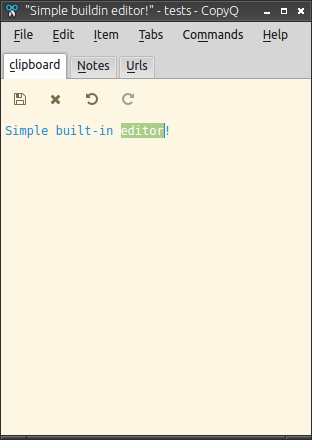
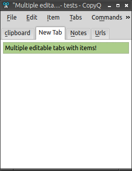
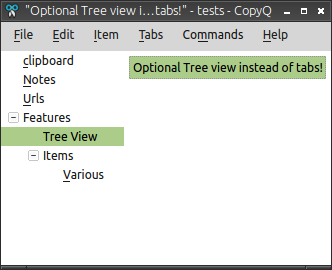
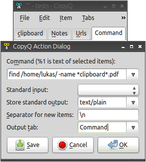
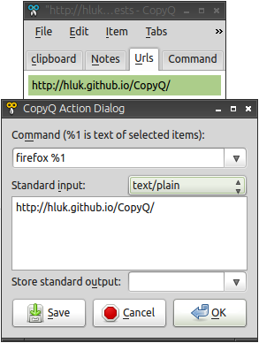

CopyQ
CopyQ is clipboard manager with searchable and editable history.
Downloads: http://sourceforge.net/projects/copyq/files/
Wiki: https://sourceforge.net/p/copyq/wiki/Home/
Mailing List: https://groups.google.com/group/copyq
Bug Reports: https://github.com/hluk/CopyQ/issues

Features
- Supports Linux and Windows.
- Store text, HTML, images and any other custom format.
- Customize tray menu.
- Save items in tabs or tree.
- Quickly browse through items (fast navigation, filtering with matched text highlighting).
- Sort items, create new, edit, remove, copy/paste to different tab.
- Variety of system-wide shortcuts (e.g. show main window or tray, edit clipboard, copy next/previous, paste as plain text).
- Immediately paste to focused window from tray or main window.
- Fully customizable appearance (colors, fonts, transparency).
- Advanced command-line interface and scripting.
- Ignore clipboard copied from some windows or containing some text.
- Apply custom commands on selected items or automatically when new matching clipboard content is available.

 
 
Install and RunTo install CopyQ, either use binary package or installer provided for your system or follow instructions in INSTALL to build the application.
To start CopyQ run copyq command without parameters. The application main
window is accessible by clicking on system tray icon or running copyq toggle.
To exit the application select Exit from tray menu or press Ctrl-Q keys in the application window.
Developers and Translators
If you want to help with translating, fixing or writing code read HACKING.
Dependencies
To compile and run the application you'll need the latest stable version of Qt library (there is also experimental support for Qt 5).
Optional dependency is QtWebKit which enables the application to use advanced HTML rendering and fetching remote images and other data. This is available through ItemWeb plugin.
Additionally X11 requires XFixes extension to be installed (fixes some clipboard issues).
Optional dependency for X11 is XTest extension (Ubuntu package libxtst6 and
libxtst-dev for compilation). This is needed for some applications like
gedit so that automatic pasting works correctly.
Keyboard navigation
-
PgDown/PgUp,Home/End,Up/Downitem list navigation
-
Left,Right,Tab,Shift+Tabtab navigation
-
Ctrl+Up,Ctrl+Downmove selected items
-
Ctrl+Left,Ctrl+Rightcycle through item formats
-
Escapehide window
-
Ctrl+Qexit
-
F2edit selected items (in place)
-
Ctrl+Eedit items in external editor
-
F5open action dialog for selected items
-
Deletedelete selected items
-
Enterput current item into clipboard
-
F1show help
Type any number to select item with given id.
Type a regular expressions (case-insensitive) to search/filter items.
Usage Examples
CopyQ must be running to be able to issue commands using command line. Most of the examples should work on GNU/Linux with the correct applications installed.
To start CopyQ run following command:
copyq
Insert text to the clipboard:
copyq add "print([x**2 for x in range(10)])"
and process it in Python interpreter:
copyq action python
The result can be copied to the clipboard with:
copyq select 0
For each file in given directory create new item:
copyq action "ls /"
Load file content into clipboard:
copyq action "cat file.txt" ""
Note: Last argument is separator - empty string means "create single item".
Process an item with the Python interpreter and redirect the standard output to the standard error output using sh command (shell):
copyq add 'print("Hello world!")'
copyq action 'sh -c "python 1>&2"'
copyq read 0
Note: Standard error output will be show as tray icon tooltip.
To concatenate items select them items in CopyQ window and press F5 key,
type cat into command input field, check Output into item(s) check box,
clear Separator field and press OK button to submit.
Monitor file (or pipe) $HOME/clipboard and load every new line into clipboard:
copyq action "tail -f $HOME/clipboard"
This process can be killed by right clicking on tray icon and selecting the process from context menu.
Find files in current directory:
copyq action "find \"$PWD\" -iname '*.cpp'"
Open CopyQ window and select one of the found files from history. Open action
dialog (press F5 key) and in the command field type your favorite text editor
(e.g. gedit %1; %1 will be replaced with temporary filename containing
selected text).
To copy an image to clipboard use for example:
copyq write image/gif - < image.gif
copyq write image/svg - < image.svg
Command Line Interface
Usage: copyq [COMMAND]
Starts server if no command is specified.
COMMANDs:
show Show main window.
hide Hide main window.
toggle Show or hide main window.
menu Open context menu.
exit Exit server.
disable, enable Disable or enable clipboard content storing.
clipboard [MIME] Print clipboard content.
selection [MIME] Print X11 selection content.
paste Paste clipboard to current window
(may not work with some applications).
copy TEXT Set clipboard text.
copy MIME DATA [MIME DATA]...
Set clipboard content.
length, count, size Print number of items in history.
select [ROW=0] Copy item in the row to clipboard.
next Copy next item from current tab to clipboard.
previous Copy previous item from current tab to clipboard.
add TEXT... Add text into clipboard.
insert ROW TEXT Insert text into given row.
remove [ROWS=0...] Remove items in given rows.
edit [ROWS...] Edit items or edit new one.
Value -1 is for current text in clipboard.
separator SEPARATOR Set separator for items on output.
read [MIME|ROW]... Print raw data of clipboard or item in row.
write [ROW=0] MIME DATA [MIME DATA]...
Write raw data to given row.
action [ROWS=0...] Show action dialog.
action [ROWS=0...] [PROGRAM [SEPARATOR=\n]]
Run PROGRAM on item text in the rows.
Use %1 in PROGRAM to pass text as argument.
popup TITLE MESSAGE [TIME=8000]
Show tray popup message for TIME milliseconds.
tab List available tab names.
tab NAME [COMMAND] Run command on tab with given name.
Tab is created if it doesn't exist.
Default is the first tab.
removetab NAME Remove tab.
renametab NAME NEW_NAME Rename tab.
exporttab FILE_NAME Export items to file.
importtab FILE_NAME Import items from file.
config List all options.
config OPTION Get option value.
config OPTION VALUE Set option value.
eval, -e [SCRIPT] Evaluate ECMAScript program.
session, -s, --session SESSION
Starts or connects to application instance with given session name.
help, -h, --help [COMMAND]
Print help for COMMAND or all commands.
version, -v, --version
Print version of program and libraries.
NOTES:
- Use dash argument (-) to read data from stdandard input.
- Use double-dash argument (--) to read all following arguments without
expanding escape sequences (i.e. \n, \t and others).
- Use ? for MIME to print available MIME types (default is "text/plain").